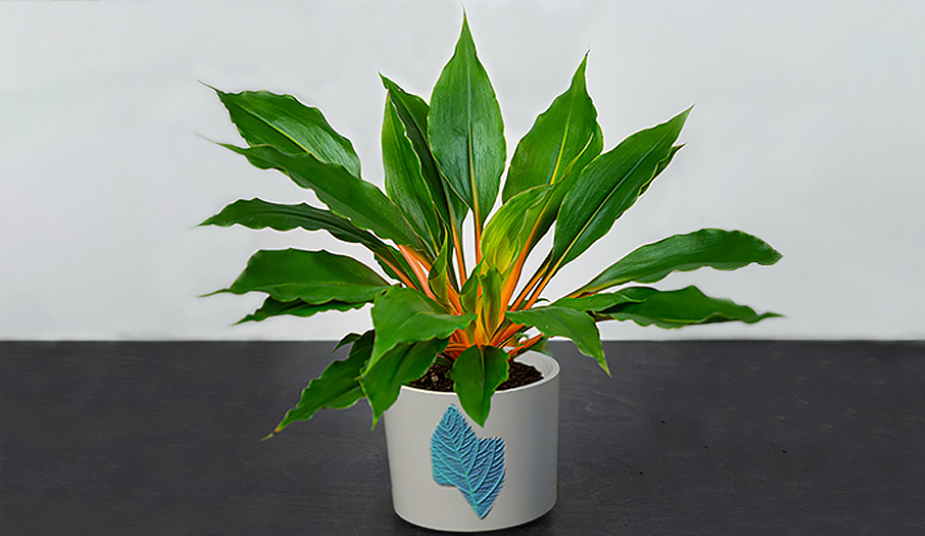

Zielistka Green Orange- pielęgnacja
Zieliska Green Orange to wyjtkowa roślina, której kolorowe ubarwienie ożywi pomieszczenie, w którym się znajduję. Kolejną zaletą zielistki jest to, że skutecznie oczyszcza powietrze ze szkodliwych substancji,dzięki czemu lepiej się czujemy w jej towarzystwie. Potrafi oczyszczać powietrze z substancji takich jak formaldehyd, ksylen, tlenek węgla, aceton, amoniak i metale ciężkie.
